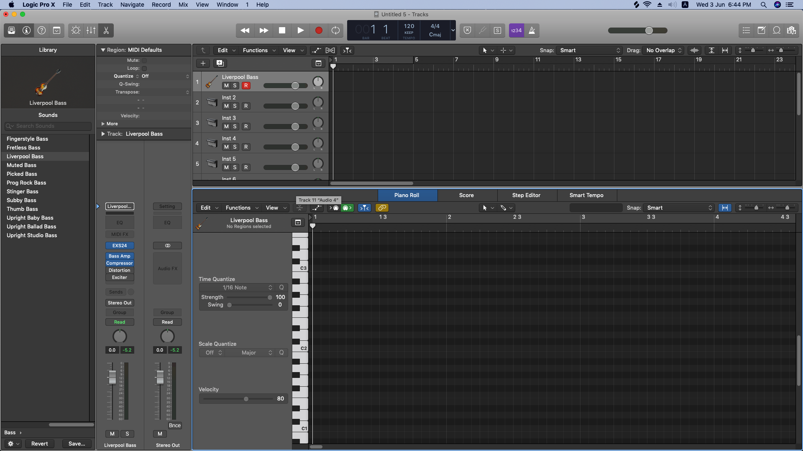
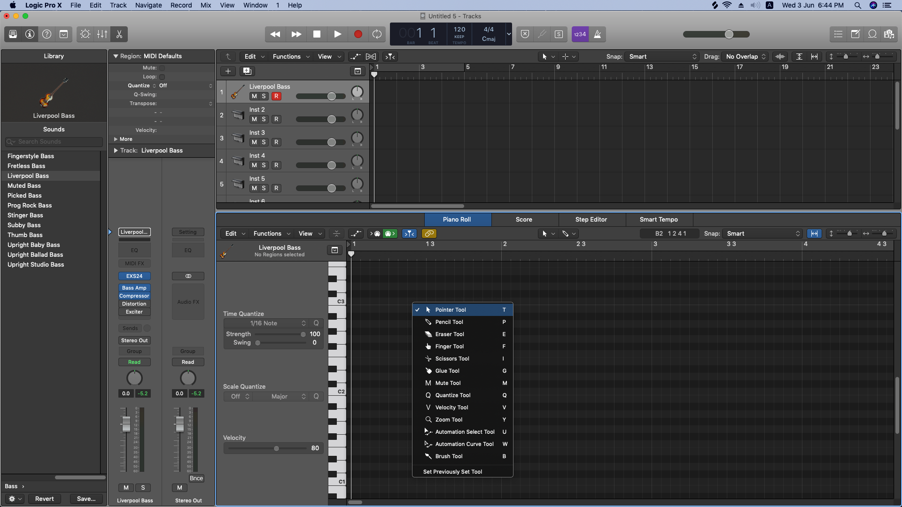
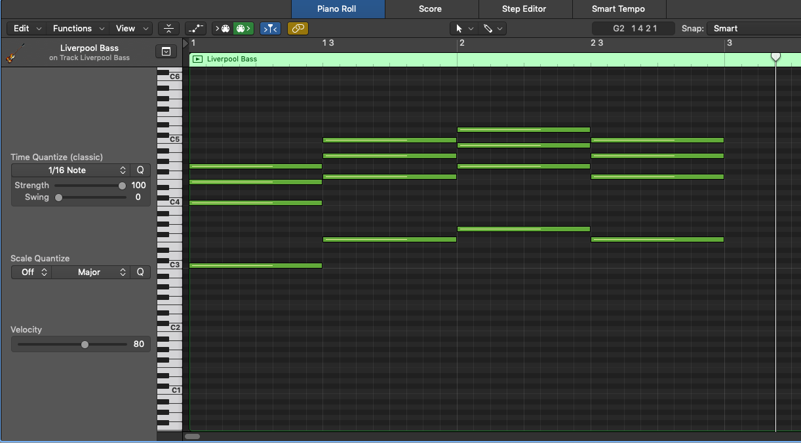
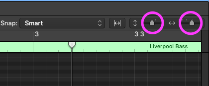

3. Piano Roll
1) Press 'E'
2) You can control piano note
3) Now you can draw piano notes soon
2) You can control piano note
3) Now you can draw piano notes soon

1) Press 'T'
2) You can open Tool menu
2) You can open Tool menu

1) 'T' = basic select key
(You can control length of note, by dragging at the end of notes)
2) 'p' = you can draw any note in piano Roll
3) 'E' = Erase note
4) 'F' = Drag notes you want
('T' can do this function, so in my opinion you don't need to use this F key!)
5) 'I' = You can cut length of note
6) 'G' = Glue notes
7) 'M' = You can mute notes
8) 'Q' = Quantize notes
9) 'V' = You can contrl velocity of notes
10) 'M' = You can mute notes
11) 'W' = You can curve the automation
12) 'B' = You can draw notes continuously
13) I think 'T', 'P', 'I' key is the most important items.
(You can control length of note, by dragging at the end of notes)
2) 'p' = you can draw any note in piano Roll
3) 'E' = Erase note
4) 'F' = Drag notes you want
('T' can do this function, so in my opinion you don't need to use this F key!)
5) 'I' = You can cut length of note
6) 'G' = Glue notes
7) 'M' = You can mute notes
8) 'Q' = Quantize notes
9) 'V' = You can contrl velocity of notes
10) 'M' = You can mute notes
11) 'W' = You can curve the automation
12) 'B' = You can draw notes continuously
13) I think 'T', 'P', 'I' key is the most important items.


1) Set Snap as 'smart'
2) You can zoom of the piano roll by that purple button
3) Shortcut Key = 'option' + 'drag' : To zoom updown side trackpad
4) Shortcut Key = 'shift' + 'option' + 'drag' : To zoom right left side trackpad
2) You can zoom of the piano roll by that purple button
3) Shortcut Key = 'option' + 'drag' : To zoom updown side trackpad
4) Shortcut Key = 'shift' + 'option' + 'drag' : To zoom right left side trackpad
